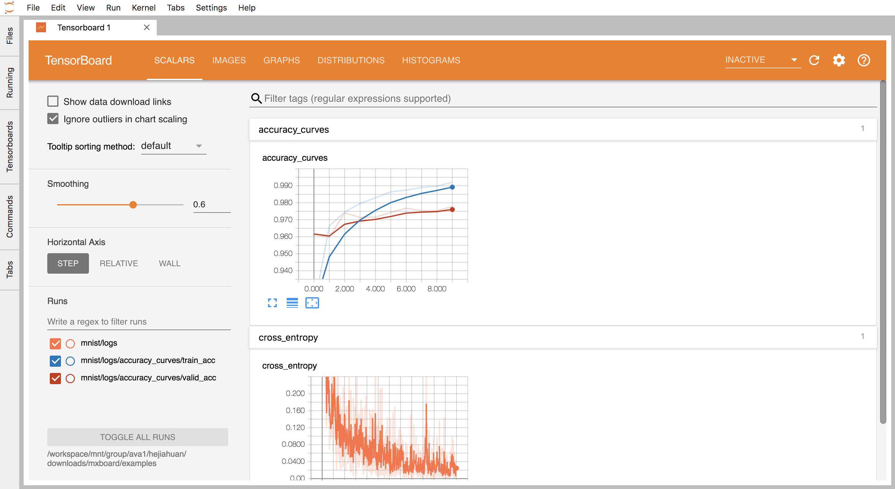

训练监控管理
训练监控通过将Tensorboard集成与JupyterLab实现， 需要使用控制台启动对应镜像。
Log生成需要修改训练代码，跟踪训练精度一般只需添加三至五行代码即可实现。
启动训练监控工作台
新建工作台 - 选择公开镜像 ava-monitor:cpu - 选择 CPU套餐 (1 Core, 6G)

启动后选择工作台JupyterLab模式，Lab中会出现Tensorboard扩展应用，启动后Tensorboard将以JupyterLab当前目录为Log查询地址。
训练Log文件夹也可以通过Commands - Create a new tensorboard 指定目录地址。

如Log文件夹指定无误，Tensorboard将正常显示Log，Log支持实时更新：

生成日志文件
各框架生成日志文件的方式与Tensorflow基本一致，并通过对应库文件生成统一格式的日志文件。
各框架对应库：
- MXNet: MXBoard
- Pytorch: TensorboardX
- Caffe: 暂时仍需转换为其他框架代码实现
Tensorflow - Tensorboard
Github：https://github.com/tensorflow/tensorboard
参考教程：https://www.tensorflow.org/guide/summaries_and_tensorboard
参考实例 （MNIST）：https://github.com/tensorflow/tensorflow/blob/master/tensorflow/examples/tutorials/mnist/mnist.py
MXNET - MXBoard
GitHub：https://github.com/awslabs/mxboard
参考教程：https://medium.com/apache-mxnet/mxboard-mxnet-data-visualization-2eed6ae31d2c
参考实例：https://github.com/awslabs/mxboard/tree/master/examples/mnist
Pytorch - TensorboardX
GitHub：https://github.com/awslabs/mxboard
参考教程：https://medium.com/apache-mxnet/mxboard-mxnet-data-visualization-2eed6ae31d2c
参考实例：https://github.com/awslabs/mxboard/tree/master/examples/mnist
注意事项
- 生成日志时需要指定文件夹保存路径，请确保路径可以被JupyterLab访问（JupyterLab只能访问到用户本人目录及子目录内容）。
- Tensorboard支持多日志文件夹同时显示，将多份文件夹置于相同根文件夹下可以更好的对比结果。